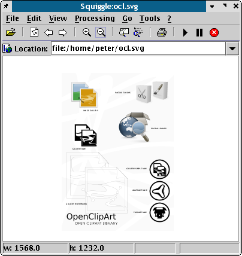

Batik is a collection of Apache XML modules for on the fly export/conversion of SVG. One of the really useful tools in the collection is Squiggle, a Java application for simply viewing SVG. It may be difficult to compile Batik on some distributions, but fortunately there are packages for all major distrubtions and operating systems available.
Why bother? Call it the sober judge of SVG. Of all of the SVG viewers, it is probably one of, if not, the most spec-compliant viewers. If you receive or create an SVG and it won’t import properly, see how it looks in Batik. If it does not display properly it is more than likely an issue with the creating application. The exception to this are SVGs exported from Adobe Illustrator, which often have Adobe-only extensions included in the SVG file and may only be viewable in Adobe applications.
|  |